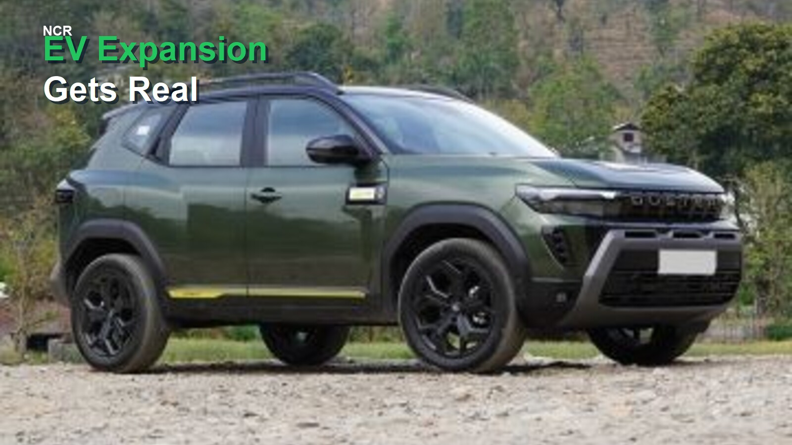

Automotive News
Renault Duster Scores 5-Star BNCAP, Tesla Model Y L Launched, Maruti Readies 4 New Cars: Week in Review
The past week has been eventful for the Indian automotive market, with a mix of safety accolades, new electric vehicle launches, and a glimpse into Maruti Suzuki's ambitious product pipeline. Leading the headlines is the